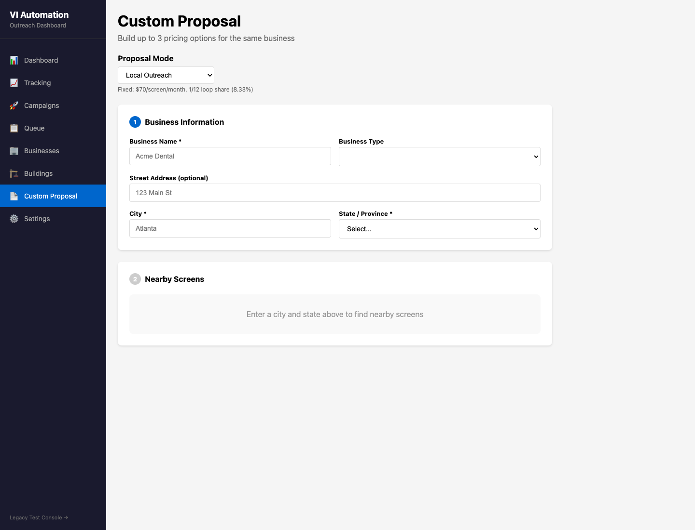
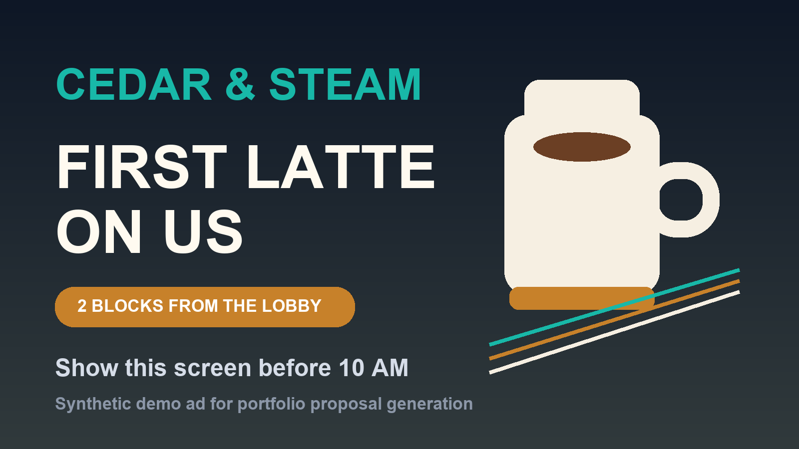

Collect business details, goals, timing, audience, and core message.
Michael McKerracher
Marketing Engineer
Digital Out-of-Home
Proposal Tool
Business context, screen inventory, map coverage, custom creative, pricing, and generated PDF assembled into a shareable sales asset.
Inputs
BusinessCategory, offer, location, and goals.
MapsNearby places, corridors, and local context.
InventoryRelevant screens, coverage, and package logic.
Proposal
tool
tool
Outputs
Local mapScreen coverage around the business.
Custom pitchCopy and ad plate matched to context.
PDFShareable proposal for sales follow-up.
Proposal building needs local context.
The tool takes the repetitive parts of local sales material and turns them into a consistent proposal system.
Inputs
Business intakeName, address, industry, goals, timing, and offer.
Maps lookupNearby geography, traffic corridors, and local context.
Screen inventoryRecommended placements, formats, coverage, and availability.
Creative contextUploaded or generated ad creative, copy angle, and CTA.
Proposal
engine
engine
Outputs
Local mapScreen coverage and business proximity visualized.
Custom copyProposal language tailored to the business and market.
Ad previewCreative shown in context for the buyer.
Proposal PDFA shareable sales asset with options and proof points.
How the proposal gets built
This page is about proposal creation. Publishing the finished sales artifact is a separate system.
Use local context and nearby places to make the pitch specific.
Recommend relevant screens and placement logic for the market.
Write the proposal around the business, not a generic media kit.
Include uploaded or generated ad creative in the proposal.
Render the map, copy, creative, and options into a shareable document.
Actual deliverables
The sample uses source-safe business data. The live tool is not linked here; the PDF, screen capture, and ad plate show the output pattern without exposing the working surface.

Generated proposal PDF
Includes local map, custom ad, proposal copy, screen package, pricing, and proof points.

Proposal builder screen
A source-safe screen capture of the proposal mode, business intake, pricing, local outreach, and screen lookup surface.

Custom ad plate
Creative included inside the proposal so the buyer can see the idea, not just the inventory.